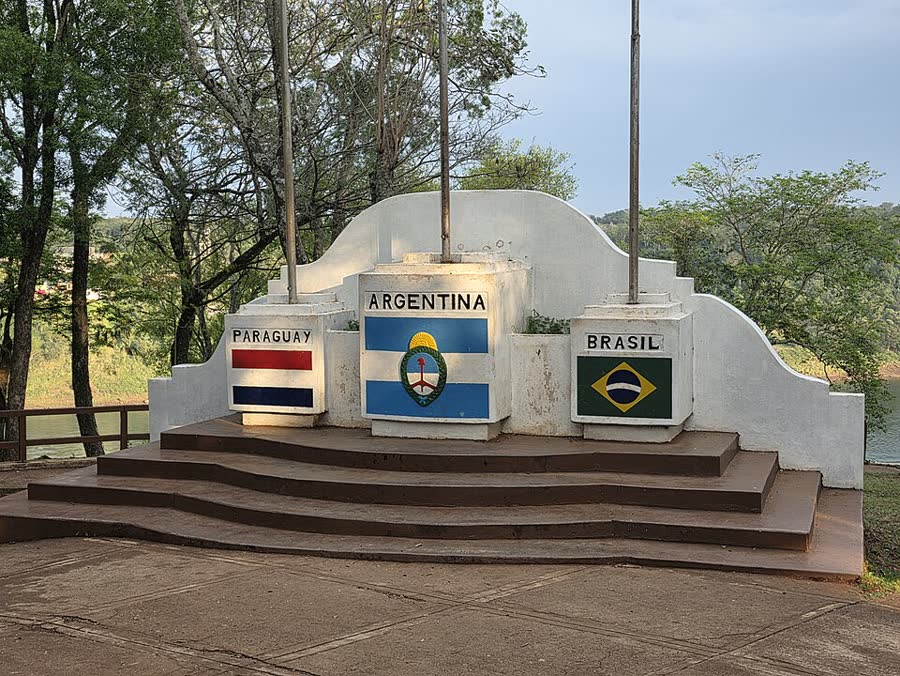
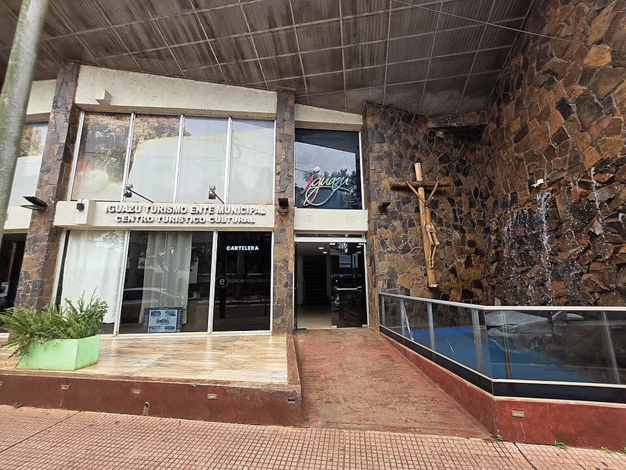
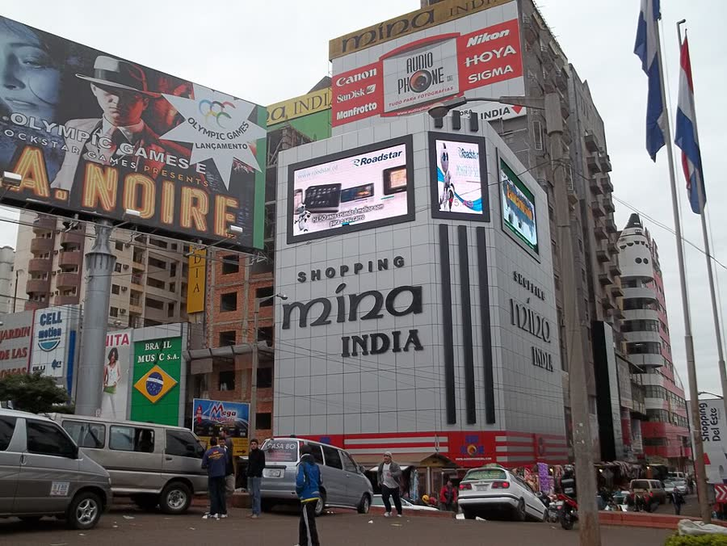
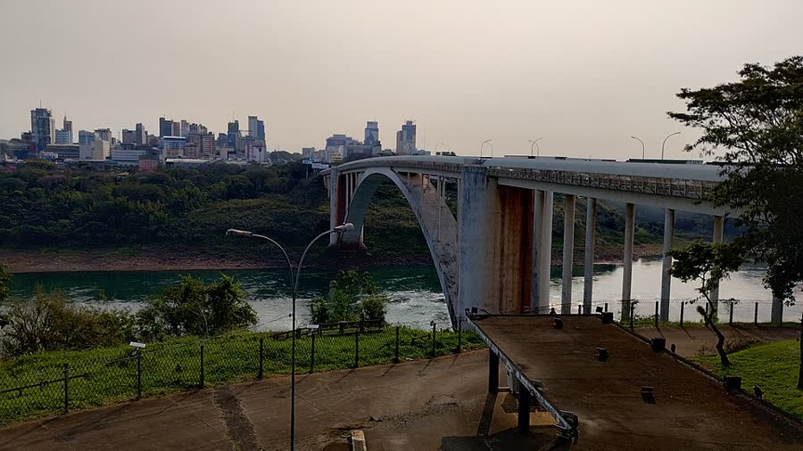
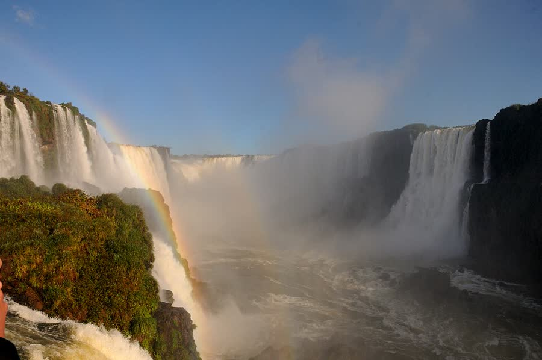
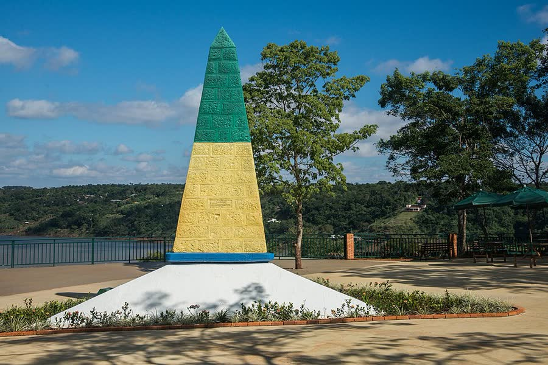
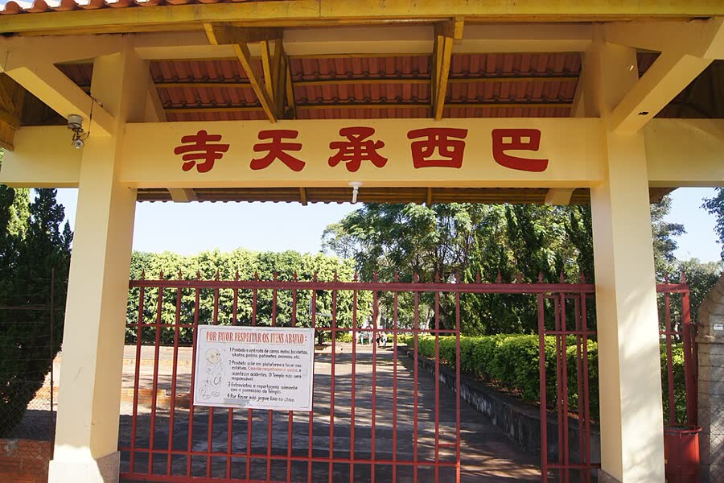

Foz do Iguaçu, Paraguai e Argentina
08 a 12 de outubro · 5 pessoas · saída de São José dos Campos
Carro e hospedagem reservados. Estimativa total: ≈ R$ 1.155 a 1.205 por pessoa. Ver gastos
Quem vai
- Leandro e Cíntiacasal · quarto 2
- Emerson e Alicecasal · quarto 1 (cama de casal)
- Alisson, irmão da Alicequarto 1 (futon)
Divisão de quartos é só sugestão: a casa tem um quarto com cama de casal e futon e outro com cama de casal.
A fazer antes de viajar
- Pagar a hospedagem (grátis cancelar até 4/10)até 2/10
- Mandar mensagem ao anfitrião (horário de chegada, portão, garagem)chat do Booking
- Confirmar se o carro alugado pode entrar na Argentinaantes de sexta
- Cada um conferir se o RG tem menos de 10 anosjá
- Comprar ingresso das Cataratas com dia e hora (feriado lota)online
- Baixar o mapa offline de Foz, Ciudad del Este e Puerto Iguazúainda no Brasil
Roteiro
-
Qui08/10
Saída de SJC, 19h
Carro retirado às 15h. Volante: Cíntia 19h, Leandro 22h, Alisson 1h, Emerson 4h, Alice 7h.
-
Sex09/10
Argentina, Puerto Iguazú

Hito Tres Fronteras · Horacio Cambeiro, CC BY 4.0 
Centro de Puerto Iguazú · Horacio Cambeiro, CC BY-SA 4.0 Chegada 10h–11h. Fila na aduana pode passar de 2h (app Puenty mostra ao vivo). Check-in na casa das 15h às 19h: cheguem antes das 19h.
- Hito Tres Fronteraso dia todo · show de águas ~20h
- Duty Free12h–21h
- Casino Iguazúa partir das 14h
- Feirinhahorário incerto (~9h–14h e 16h–23h)
- Almoço: Mucha Previa, Perito Moreno 221confirmar se abre no almoço
-
Sáb10/10
Paraguai, Ciudad del Este

Centro de Ciudad del Este · Va de Carro, CC BY 3.0 
Ponte da Amizade · Pedro Nardi, CC BY 4.0 Carro no estacionamento perto da aduana (fecha 18h) e ponte a pé. Chegada 8h30–9h. Comecem pelas lojas que fecham às 16h.
- SA Shop7h–16h
- Mega Eletrônicos6h30–16h
- Nissei~6h30 a 15h–16h
- Shopping Paris7h até ~18h
- Shopping China7h–20h
- CellShop9h–21h
- New Zone7h–22h
-
Dom11/10
Foz do Iguaçu, saída às 20h

Cataratas, lado brasileiro · Josep M. Gracia, CC BY-SA 4.0 
Marco das 3 Fronteiras · Zig Koch / MTur, domínio público Parque das Aves · Deni Williams, CC BY 2.0 
Templo Budista · Jonas de Carvalho, CC BY-SA 2.0 - Café, malas no carro, check-out7h–7h40
- Cataratas (trilha até a Garganta do Diabo)8h30–11h
- Parque das Aves (em frente às Cataratas)11h15–13h
- Almoço (Barracão, buffet)13h–14h
- Templo Budista (grátis)14h30–15h30
- Marco das 3 Fronteiras (show ~18h30)15h45–18h30
- Jantar (Asmars, 4 Sorelle ou Dona Elvira)18h30–19h30
- Saída pra SJC · volante: Cíntia, Leandro, Alisson, Alice, Emerson20h
Apertado no Parque das Aves: se quiserem mais tempo lá, cortem o Templo. Fechados no domingo: Restaurante Roque, Doce Pão e a Mesquita.
-
Seg12/10
Chegada em SJC ~11h
Devolver o carro até 16h (feriado).
Outros passeios em Foz
Não cabem no domingo, mas ficam de referência.
- Itaipu Panorâmica (1h10–1h30)R$ 63
- Roda-gigante Yup Star (compra online)R$ 59,90
- Cataratas, lado argentino (dia inteiro)≈ R$ 240
- Macuco Safari (barco nas Cataratas)R$ 384
Documentos
- RG ou CIN físico, emitido há menos de 10 anosserve
- Passaporte válidoserve
- CNH, ou RG só no celularnão serve
- Carro na Argentina: CNH, CRLV, Carta Verde e autorização da locadoraobrigatório
Se a Unidas não autorizar, deixem o carro em Foz e cruzem para a Argentina de ônibus, táxi ou Uber. No Paraguai o carro fica do lado brasileiro. Compras: cota de US$ 500 por pessoa; guardem as notas.
Carro

SUV Médio Reservado
T-Cross, Kicks ou Creta · Unidas
- Retirada / devolução08/10 15h · 12/10 até 16h
- Aluguel (4 diárias + proteção)R$ 632,50
Hospedagem
Casa com piscina Reservado
Rua das Rosas, 1024, Foz do Iguaçu · mapa
- Datassex 09/10 a dom 11/10
- Check-in / check-out15h–19h · até 12h
- Valor (R$ 120 por pessoa)R$ 600
2 quartos, 2 banheiros, piscina, churrasqueira, cozinha, ar, Wi-Fi e garagem grátis. A 8,3 km da ponte. Sem festa, sem fumar.
Gastos
- Carro (aluguel)R$ 632,50
- Combustível e pedágio≈ R$ 1.674
- HospedagemR$ 600
- Estacionamentos (ponte ≈ R$ 25, Cataratas R$ 65)≈ R$ 90
- Cataratas (5 × R$ 121)R$ 605
- Parque das Aves (5 × ≈ R$ 110)≈ R$ 550
- Almoços, jantar de domingo, cafés e lanches≈ R$ 1.275
- Jantares de sexta e sábado: em casa / fora≈ R$ 350 / 600
- Total do grupo≈ R$ 5.777 a 6.027
- Por pessoa≈ R$ 1.155 a 1.205
- Por casal≈ R$ 2.310 a 2.410
Fora da conta: Marco das 3 Fronteiras (preço a confirmar), compras no Paraguai e câmbio. Comida é meta, não cardápio.
Cupons e comida barata
- MDMARCO15 · Marco das 3 Fronteiras15%
- FOZ20 + MELHORESDESTINOS · Laçador de Ofertas (pode ter vencido)até 25%
- Barracão · buffet livreR$ 44,90–59,90
- 4 Sorelle · rodízio no jantarR$ 79
Promoção Melhores Destinos · Laçador de Ofertas. Testem na hora de comprar.
Mapas
Abram ainda no Brasil e baixem o mapa offline: lá não tem internet.
- Casa (hospedagem)Rua das Rosas, 1024
- Estacionamento Bismillahperto da ponte · seg–sáb 4h–18h
- Ponte da Amizadea pé, 24h
- SA Shopsáb 7h–16h
- Mega Eletrônicossáb 6h30–16h
- Nisseisáb até 15h–16h
- Shopping Parissáb até ~18h
- Shopping Chinasáb 7h–20h
- CellShopsáb 9h–21h
- New Zonesáb 7h–22h
- Hito Tres FronterasArgentina, o dia todo
- Cataratas do Iguaçudom 8h30–17h30
- Parque das Avesdom 8h30–16h30
- Templo Budistadom 9h30–16h30 · grátis
- Marco das 3 Fronteirasdom 15h–21h
- Restaurante Barracão11h–15h30